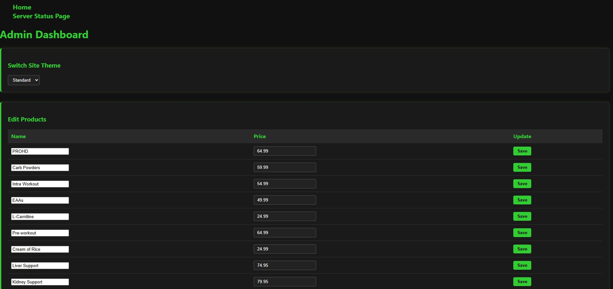
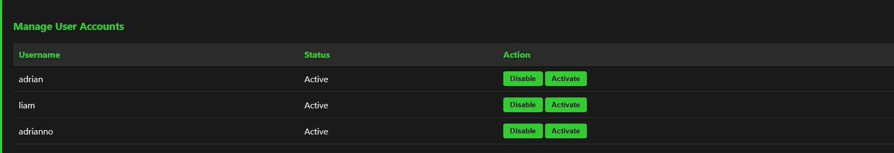

Using The Admin Panel
Within the Admin Panel, admin-roled users can switch the theme of the website via the Switch Site Theme dropdown. Aside from this, site admins can also edit the products table information, including the name of the products and the price. Simply type in its new value and hit the save button to copy the changes over to the database. Admin users can also control the status of other users through the Activate/Deactiveate button-functionality. When a user is toggled as deactivated, the database will reflect that. Likewise, when a user is toggled to be reactived, the database will also reflect that. Finally, on the admin page, there is a link to the Server Status Page, including details on the server and site connection.
 